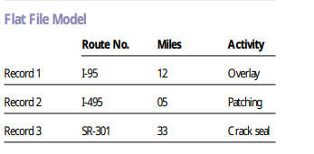
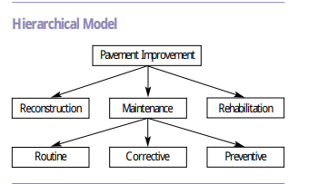
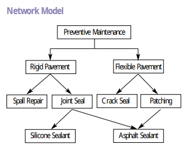
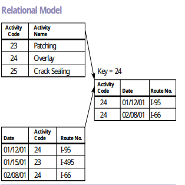
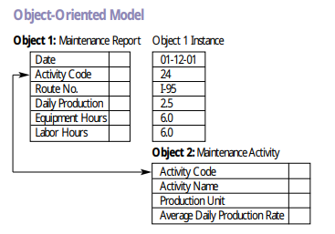
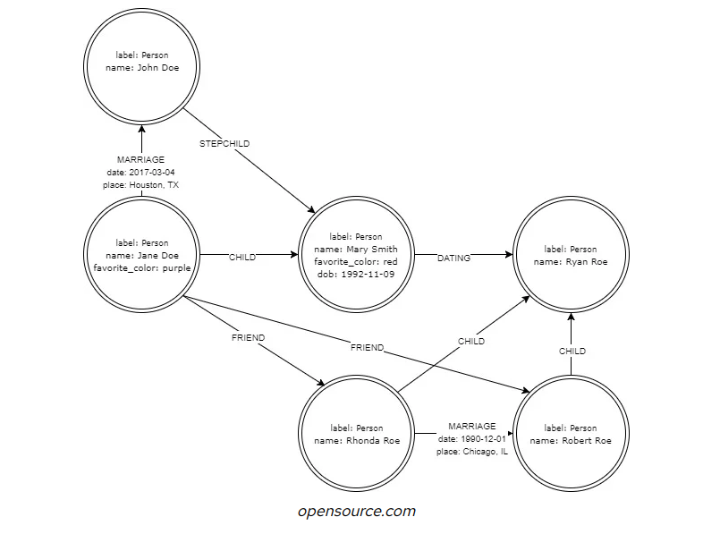

flowchart TB
subgraph database
subgraph collection
subgraph document
d1["{id:1,name:'Atilla'}"]
d2["{id:2,name:'Duru'}"]
end
end
end
6 Veri Tabanı Modelleri
6.1 Dosya tabanlı veri tabanları
Verilerin düz dosyalarda tutulduğu veri tabanlarıdır. Hala verilerin çok karışık olmadığı durumlarda yaygın olarak kullanılır. Örneğin tüm yapılandırma (configuration) verileri bu anlamda düşünelebilir. CSV (Comma Separated Values, virgul ile ayrılmış değerl) dosyaları yine bu veri tabanları arasında sayılır. Özellikle veri tabanları arasında veri paylaşımı için yaygın olarak kullanılırlar.
Unix türevi sistemlerde ki kullanıcı bilgilerin saklayan aşağıdaki dosyalar yine bu veri tabanlarına çok bilinen bir örnektir.
- /etc/passwd
- /etc/group
 Asset Management (2001)
Yapısı yüzünden ile tek bir tablo tutulması daha kolaydır.
6.2 Sıra düzenli (hierarchical) veri tabanları
 Asset Management (2001)
Bu veri tabanı yapısı ağaç mantığında verilerin aşağıya doğru birbirleribilgilerin
Hiyerarşik veri tabanı modeli, her kaydın tek bir ebeveyni ve birden fazla çocuğu olacak şekilde verileri ağaç benzeri bir yapıda, bakını yukarıdaki şekil, düzenler. Aşağıdaki kavramlar bu tip verilerin tutulması için en çok tercih edilenlerdir.
- Aile Agaçı
- Dosya sistemi
- Organizasyon şemaları
Verilerin bu şekilde tutulduğu modern bir örnek için digitalization unified namespace sayılabilir.
- UNS (Unified Namespace)
Unified namespace sistemlerde veriler ISA95 standardında tutulur.
- Metal Fabrika (area)
- Ankara şube (site)
- Kaynak Bölgesi (cell)
- Robot kolu 1
- Kaynak Bölgesi (cell)
- Ankara şube (site)
6.3 Ağ (Network) model veri tabanları

Asset Management (2001)
Ağ veritabanı modeli, kayıtlar arasında çoktan çoğa ilişkilere izin veren esnek bir veri düzenleme yoludur. Hiyerarşik modelin sorunlarını aşmak için önerilmiştir. Her kaydın yalnızca bir üst öğesi olduğu hiyerarşik modelin aksine, ağ modeli kayıtların birden fazla üst öğeye sahip olmasına izin vererek birbirine bağlı verilerden oluşan karmaşık bir ağ oluşturur. Ağ veritabanı modeli, sosyal ağlar veya tedarik zincirleri gibi gerçek dünya senaryolarını temsil etmek için özellikle yararlıdır.
6.4 İlişkisel veri tabanı modeli

Asset Management (2001)
İlişkisel veri tabanı modeli 1970 yılında IBM firmasında çalışan Dr. Codd tarafından önerilmiştir Codd (1970). İlişkisel veri tabanı modeli daha önce kullanılan 3 veri tabanı modelinde karşılamaktadır. Yani hem düz dosya tabanlı, hem hiyerarşik hem de ağ (network) model yapısı ilişkisel veri tabanı olarak modellenebilir. Bu modelin esnek yapısı sayesinde günümüzdeki yapısal (structured) verilerin çoğunluğu ilişkisel veri tabanlarında saklanmaktadır. Bu model dersimizin ana konusudur.
6.5 Nesneye yönelik (object oriented) veri tabanı modeli

Asset Management (2001)
Nesneye yönelik veri tabanı modelleri nesneye yönelik programlamanın başarısı üzerine önerilmiş veri tabanlarıdır. Bir süre popular olmuş olmalarına rağmen günümüzde az kullanılırlar. Oracle ve postgres veri tabanları bu paradigmayı direk desteklemektedir.
Bu modellemede veriler nesne (object), kalıtım (inheritance) ve diğer nesneye yönelik programlar özellikleri kullanılarak modellenir.
Ben, bu nesne özelliklerinin üretim Oracle veritabanlarında kullanıldığını hiç görmedim.
6.6 XML veritabanları
XML’in 2000’li yıllarda populer olması ile XML veri tabanları ortaya çıkmıştır. Diğer veri tipleri gibi XML verilerin kayıt edilmesi, sorgulanması bilinen veri tabanlarının bir kısmı tarafından yapılmıştır.
- Oracle’ın yerel xml depolama ve sorgu yetenekleri vardır, bkz. Oracle XML DB.
- SQL Server’ın da yerel xml depolama ve sorgu yetenekleri vardır, bkz. Sql Server XML Data
XML kullanımı artık çok azalmıştır. Bunun nedeni JSON veri tipinin çok daha populer olmasıdır. JSON’un bu populerliği, bir sonraki belge veri tabanı modelinin sunulmasına neden olacaktır.
6.7 Dokuman (Belge) veritabanları
Belge veritabanları çoğunlukla json belgelerini depolar. Bunlar şema içermeyen veri düzenlemeleridir. İlişkisel veritabanlarından farklı olarak, önceden veritabanı şemasını tasarlamak zorunda değilsinizdir. Bunun avantajları ve dezavantajları vardır. En bilinen örnek mongodb’dir.
Veri tabanı (database) en üst seviyedeki veri tutma nesnesidir. Veri tabanı bir çok kolleksiyon içerebilir. Kolleksiyon (collection) ilişkisel veri tabanlarındaki tabloya denktir. Dokuman (document) ise bu kolleksiyon içindeki bir satır olarak json nesnesidir. Örnek olarak:
- veri tabanı = kütüphane
- Kolleksiyon = Kitap rafı
- Dokuman = kitap
Örnek Dokuman veri tabanları:
- MongoDB
- Databricks
- Amazon DynamoDB
- Microsoft Azure Cosmos DB
- Couchbase
- Firebase (google)
- Oracle NoSQL
SQL standardına eklenen json fonksiyonları sayesinde bütün modern ilişkisel veri tabanları dokuman veri tabanı olarak çalışabilmektedir.
- oracle
- SQL-Server
- SQLite
- Postgres
- MySQL/MariaDB
6.8 Çizge (graph) veri tabanları

Çizge modelleri ağ modellerinin daha genelleştirilmiş ve esnek bir biçimi olarak sunulmuştur. Ağ modellerinde nodlar arasında tek bir ilişki olabilirken, çizge modellerinde bu kısıtlama kaldırılmıştır. Verilerde gezinmek ve sorgulamak için yeni yöntemler önermişlerdir. Çizge model veri tabanları, sosyal ağlar, öneri (recommendation) motorları ve bilgi grafikleri (knowledge graphs) gibi karmaşık ve gelişen ilişkilerle ilgilenen uygulamalar için oldukça uygun hale getirir.
Graph Query Language (çizge sorgu dili) bir standard olarak Nisan 2024’te sunulmuştur.
SQL:2023 standardı “Property Graph Queries (SQL/PGQ)” eklemiştir. Bu sayede veriler çizge (graph) gibi sorgulanabilecektir.
6.9 Vektor veri tabanları
Üretken yapay zekanın (Generative AI) populer olması ile RAG (retrieval augmented generation) uygulamaları için vektpr veri tabanlarının populerliği artmıştır. Aşağıda bir RAG uygulaması için nasıl çalıştıklarına dair bir örnek görülebilir.
graph TD
A[Kullanıcı Sorgusu] --> B[RAG Sistemi]
B --> C[Sorgu Gömme]
C --> D[Vektör Veritabanı]
D --> E[Benzer Vektörleri Al]
E --> F[İlgili Belgeleri Getir]
F --> G[Orijinal Sorguyu Artır]
G --> H[Büyük Dil Modeli]
H --> I[Yanıt Oluştur]
I --> J[Kullanıcıya Yanıt Dön]
subgraph "Belge Alımı"
K[Kaynak Belgeler] --> L[Metin Yığınlama]
L --> M[Gömme Üretimi]
M --> N[Vektör Veritabanında Sakla]
end
D -.-> N
Bu veri tabanlarında veriler bir vektor olarak tutulmakta ve vektor operasyonları daha hızlı olarak yapılmaktadır. Bilinen veri tabanları bu özellikleri sunmaya başlamıştır.
- postgres
- oracle
- MariaDb
- MongoDb
- Couchbase
- Neo4J
- Redis
Ama ayrıca sadece vektor veri tabanı olarak çalışan ürünlerde vardır.
- Pinecone
- Milvus
- Qdrant
- Chroma
Aşağıdaki yazı vector veritabanlarının yanlış soyutlama olduğunu iddia ediyor. Vector veri tabanı kullanmak yerine, vector gömülü verilerinin (embeddings) indeks mantığında veri tabanı tarafından yönetilmesinin daha mantıklı olduğunu söylüyor.